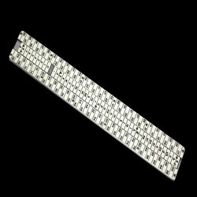
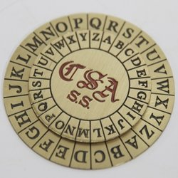

What Is a Vigenère Cipher
The Vigenère cipher is a method of encrypting alphabetic text by using a series of interwoven Caesar ciphers based on the letters of a keyword. It is a form of polyalphabetic substitution. To encrypt, a table of alphabets can be used, termed a tabula recta, Vigenère square, or Vigenère table. It consists of the alphabet written out 26 times in different rows, each alphabet shifted cyclically to the left compared to the previous alphabet, corresponding to the 26 possible Caesar ciphers. At different points in the encryption process, the cipher uses a different alphabet from one of the rows. The alphabet used at each point depends on a repeating keyword.
A Case Of Mistaken Identity
The Vigenère (French pronunciation: [viʒnɛːʁ]) cipher has been reinvented many times. The method was originally described by Giovan Battista Bellaso in his 1553 book La cifra del. Sig. Giovan Battista Bellaso; however, the scheme was later misattributed to Blaise de Vigenère in the 19th century, and is now widely known as the "Vigenère cipher"
Cracking the Cipher
Though the cipher is easy to understand and implement, for three centuries it resisted all attempts to break it; this earned it the description le chiffre indéchiffrable (French for 'the indecipherable cipher'). Many people have tried to implement encryption schemes that are essentially Vigenère ciphers. Friedrich Kasiski was the first to publish a general method of deciphering a Vigenère cipher in 1863.
History Of The Vigenère Cipher
The first well-documented description of a polyalphabetic cipher was formulated by Leon Battista Alberti around 1467 and used a metal cipher disc to switch between cipher alphabets. Alberti's system only switched alphabets after several words, and switches were indicated by writing the letter of the corresponding alphabet in the ciphertext. Later, in 1508, Johannes Trithemius, in his work Poligraphia, invented the tabula recta, a critical component of the Vigenère cipher. The Trithemius cipher, however, only provided a progressive, rigid, and predictable system for switching between cipher alphabets.